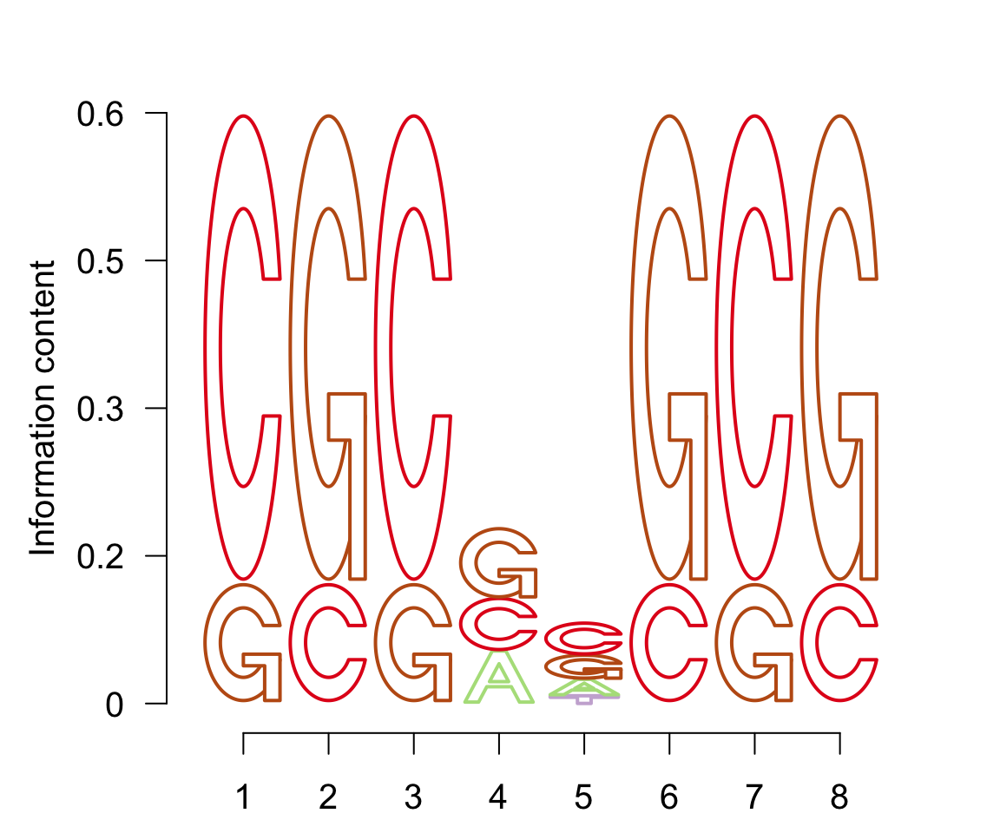
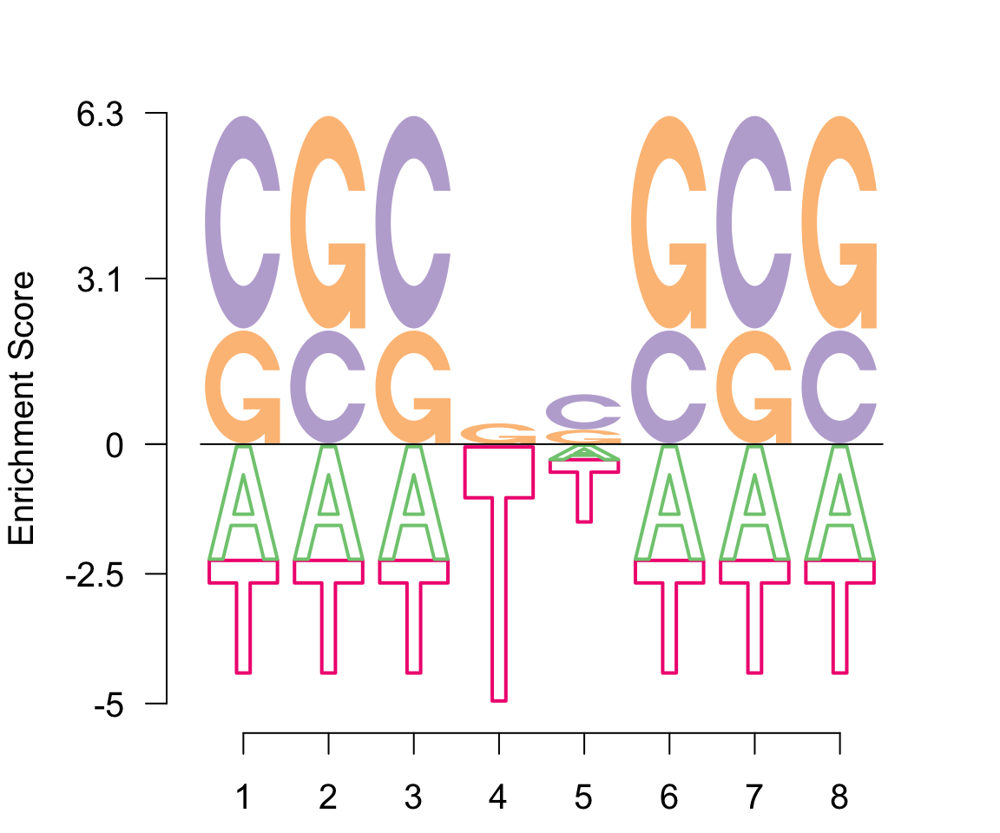
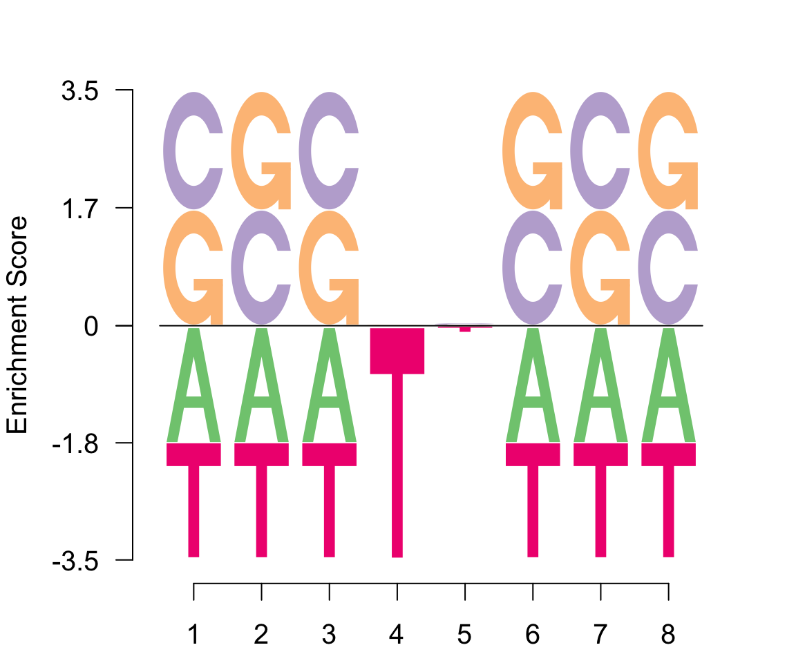
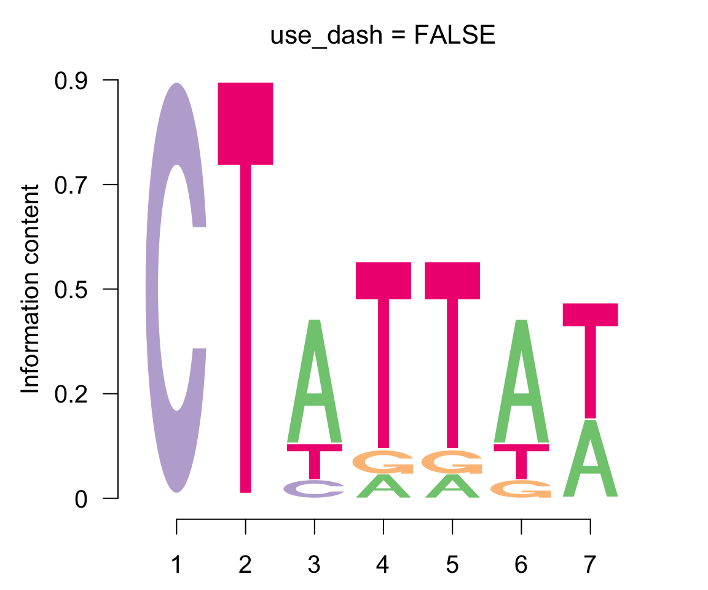
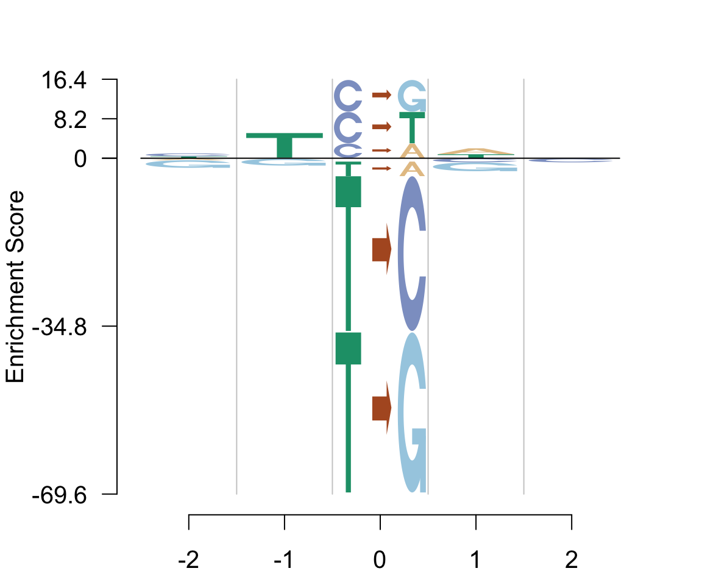

Configuring Logos
Coloring schemes
The logomaker() function provides three arguments to set the colors for the logos, a color_type specifying the scheme of coloring used, colors denoting the cohort of colors used and a color_seed argument determining how sampling is done from this cohort.
The color_type argument can be of three types, per_row, per_column and per_symbol. colors element is a cohort of colors (chosen suitably large) from which distinct colors are chosen based on distinct color_type. The number of colors chosen is of same length as number of rows in table for per_row (assigning a color to each string), of same length as number of columns in table for per_column (assuming a color for each column), or a distinct color for a distinct symbol in per_symbol. The length of colors should be as large as the number of colors to be chosen in each scenario. % The default color_type is per-row and default colors comprises of a large cohort of nearly 70 distinct colors from which colors are sampled using the color_seed argument.
logomaker(p, color_type = "per_row",
colors = c("#7FC97F", "#BEAED4", "#FDC086", "#386CB0"),
type = "EDLogo")
logomaker(p, type = "EDLogo", color_seed = 1500)Styles of symbols
Besides the default style with filled symbols for each character, one can also use characters with border styles. For the standard logo plot, this is accomplished by the tofill control argument.
logomaker(p, type = "Logo",
logo_control = list(control = list(tofill= FALSE)), color_seed = 4000)
For an EDLogo plot, the arguments tofill_pos and tofill_neg represent the coloring scheme for the positive and the negative axes in an EDLogo plot.
logomaker(p, type = "EDLogo",
logo_control = list(control = list(tofill_pos = TRUE,
tofill_neg = FALSE)))
Background Info
Logolas allows the user to scale the data based on a specified background information. The background information can be incorporated in the argument bg. The default value is NULL, in which case equal probability is assigned to each symbol. The user can however specify a vector (equal to in length to the number of symbols) which specifies the background probability for each symbol and assumes this background probability to be the same across the columns (sites), or a matrix, whose each cell specifies the background probability of the symbols for each position.
First example with bg as a vector.
bg <- c(0.05, 0.90, 0.03, 0.05)
names(bg) <- c("A", "C", "G", "T")
logomaker(p, bg=bg, type = "EDLogo")Second example with bg as a matrix.
logomaker(p, bg=(p+1e-02), type = "EDLogo")
Adaptive scaling of logos (dash)
Logolas allows the user to perform adaptive scaling of the stack heights in a logo plot based on the number of aligned sequences, using the use_dash argument. This scaling is performed only when the data input into the logomaker() function is a vector of sequences or a position frequency (PFM) matrix. We show an example with and without the use_dash argument.
sequence <- c("CTATTGT", "CTCTTAT", "CTATTAA", "CTATTTA", "CTATTAT", "CTTGAAT",
"CTTAGAT", "CTATTAA", "CTATTTA", "CTATTAT")
logomaker(sequence, use_dash = FALSE, type = "Logo",
logo_control = list(pop_name = "use_dash = FALSE"))
logomaker(sequence, type = "Logo", logo_control = list(pop_name = "use_dash = TRUE"))The adaptive scaling is performed by the Dirichlet Adaptive Shrinkage method, the details of which can be viewed at our dashr package.
Logolas allows the user to plot symbols not just for characters as we saw in previous examples, but for any alphanumeric string. We present two examples - one for representing mutation signature and another for representing histone marks composition.
Histone marks string symbols example
histones <- get(load(system.file("extdata", "histone_marks.Rdata", package = "Logolas")))
logomaker(histones$mat, bg=histones$bgmat, type = "EDLogo")
Mutation signature string and character mix example.
mut <- get(load(system.file("extdata", "mutation_sig.Rdata", package = "Logolas")))
logomaker(mut, type = "Logo", color_seed = 3000)The user may want to have distinct colors for distinct symbols. This is where we use the per_symbol option for color_type.
logomaker(mut, type = "Logo", color_type = "per_symbol", color_seed = 2300)The corresponding EDLogo
logomaker(mut, type = "EDLogo", color_type = "per_symbol", color_seed = 2300)